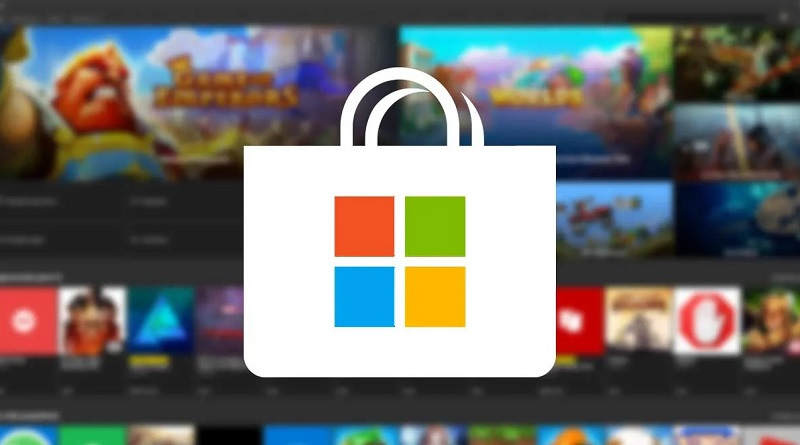
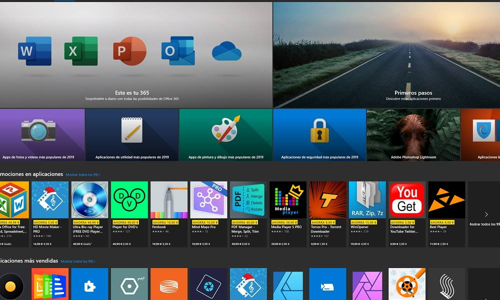
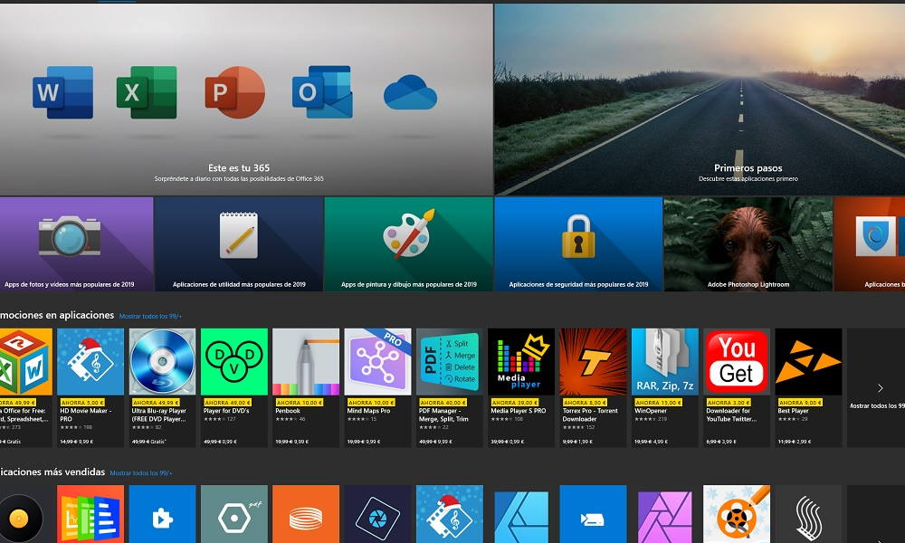

Microsoft estaría trabajando en un importante rediseño para la tienda de Windows
Un nuevo rumor indica que Microsoft está trabajando en una revisión importante de su tienda para Windows 10. Según informes publicados por Windows Central, el cambio no solo sería visual, sino también en cuanto a las políticas de qué tipos de software se pueden presentar para integrar el espacio.
Además, el cambio también se centraría en ofrecer una experiencia de usuario más rápida y atractiva. El sitio informa que la nueva versión de la tienda debería seguir el mismo lenguaje visual que la actualización de Sun Valley, que renovará la interfaz de Windows 10 en su totalidad en futuras actualizaciones.
La nueva Microsoft Store seguirá siendo una aplicación basada en UWP (Universal Windows Platform) pero recibirá actualizaciones frecuentes de forma mensual. La intención de Microsoft es facilitar aspectos como la descarga de archivos de gran tamaño, además de agilizar el proceso de instalación de las aplicaciones.
 

Microsoft busca una tienda más abierta
Según el informe, la versión remodelada de la tienda debería resultar un espacio más abierto para los desarrolladores, lo que incluye aceptar aplicaciones en formato Win32 que no están “reempaquetadas” en formato MSXI. Además, debería ofrecerse una red de distribución de actualizaciones (TLD) propia como una forma de permitir a los desarrolladores traer nuevas versiones de sus productos más rápidamente.
No obstante, el cambio más sustancial debería consistir en liberar el uso de plataformas de ventas no relacionadas con su sistema en las aplicaciones y juegos disponibles. Con eso, los desarrolladores podrán evitar por completo la posibilidad de ceder una parte de sus ganancias a Microsoft, lo que sería un movimiento sin precedentes en la industria.
La idea central de la nueva Tienda Windows es ser una plataforma abierta que ofrezca la mejor experiencia de usuario posible para los usuarios de Windows 10. Con la renovación, la empresa también debería enfocar en ella algunos de sus principales productos, como Teams, el navegador Edge y el paquete Office. Se espera que la empresa revele oficialmente sus planes durante la conferencia Build 2021, programada para el 25 de mayo.